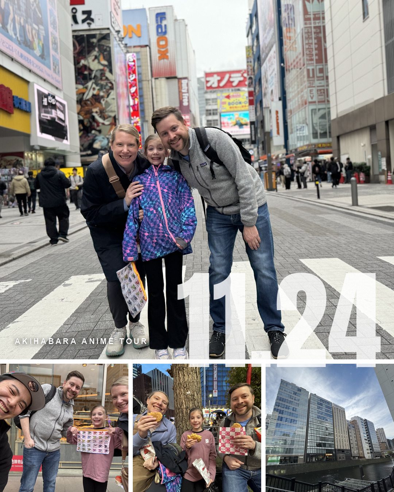
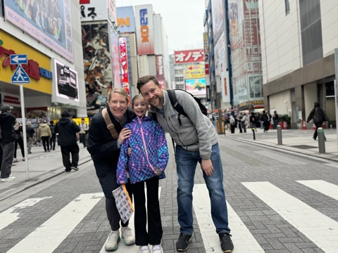
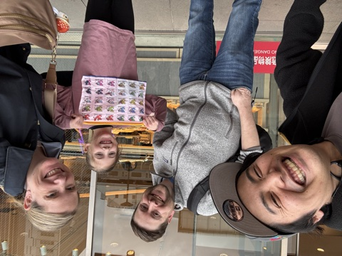
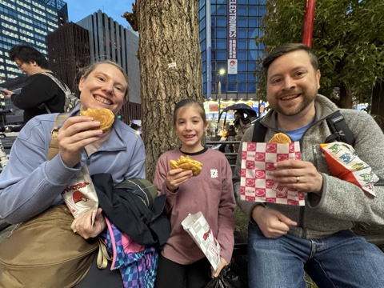

「フィード画像を作り直す」画面のコラージュ部分（主役／下1／下2）の並べ方を5案作りました。番号で選んでください。
現状は1つのセルの中に「主役の写真 → 主役差替ボタン → 下1の写真 → 差替ボタン…」が縦に詰まっています。主役差替ボタンが下1の写真の真上に来るため、ボタンが下の写真のものに見えて勘違いしやすい状態です。5案とも「写真・ラベル・ボタンがその写真のもの」と一目で分かる結びつけ方を変えています。
あわせて、確定済みの今後の形として、各写真のボタンは「差替＋範囲」（主役は「主役差替＋範囲」）で描いています。通常枠（01.jpg等）の「← 差替 範囲 戻す →」と揃えた構成です。
写真ごとに1枚のカードにし、写真・ラベル・ボタンをすべてカードの枠の中へ。枠の外には何も出ないので、所属が絶対に混ざりません。




ボタンを写真の真下にくっつけて（隙間ゼロ・枠つながり）、次の写真との間だけ大きく空けます。近いものが同じグループに見える近接の原則で分ける、最小変更の案です。
ラベルは写真の左上のタグ、ボタンは写真の下端にオーバーレイ。ボタンが写真の外に出ないので取り違えようがなく、縦の長さも一番短くなります。
写真の左に黒い縦帯を作り、役割（主役／下1／下2）・ファイル名・ボタンを全部その帯へ。帯と写真が横に貼り合うので、上下の混線が起きません。
「主役 008.jpg」のような黒い見出し帯を写真ごとに置き、その下に写真とボタンをまとめます。帯が区切り線になるので、スクロールしても区間がはっきり分かれます。
モックについて：だんどりー本番 server.py の igBlock（00-collage.jpg 分岐）の構造 — コラージュ完成図＋主役サムネ＋「主役 ○○○.jpg」ラベル＋差替ボタン、下1・下2の繰り返し、「全部自動に戻す」— を土台に再現。写真は Jennifer West 回ギャラリー（m2 ~/tour-photos/galleries/2026-11-24-yuuki-s-animetour-w-jennifer-west/）の実サムネです。本番実装は含みません。